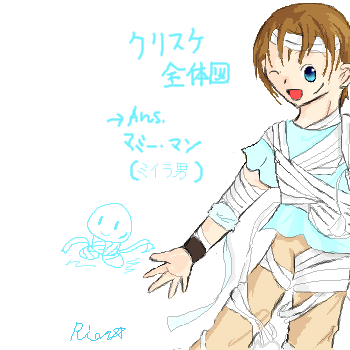
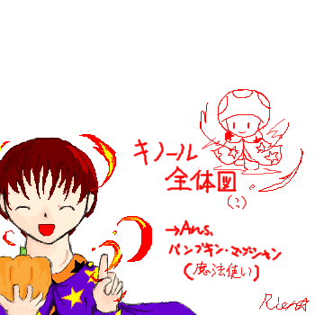
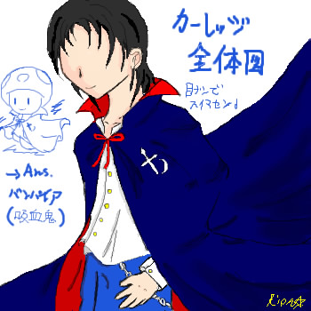

答え合わせ編
誰が何に仮装していたのでしょう？

クリスケはマミー･マン･･もとい、ミイラ男の仮装をしております。･･うん、似合わないね！（ぇえ
普段から布をひらひらさせてる方なので、布に埋もれてしまえという事でミイラさんになりました。
製作した絵のアニメから直接引っ張ってきたので位置がおかしいです；
･･･この時点で右寄せにしすぎたと気づいていれば。
ついでにこのカッコ、普段のクリスケの服装から、一番上の布を取ってその上に包帯ぐるぐるした感じです。
あの長い布（？）を取ると、クリスケはTシャツにズボンという平々凡々な服装なんですね（考えたのはお前だ。

もはや全体図と言えるのかどうかかなり怪しい物でありますが。
えーっと、キノールはパンプキン･マジシャン･･つまり、カボチャの魔法使いさんです。
･･意味分かんねえって顔しないで下さいお願いします（おい；）結構苦し紛れでこうなってしまったのです。
この方もアニメから引っ張ってきたので位置がおかしい。全体図と言いながら胸の上しか分からないじゃないか；
とりあえず、マントに無駄な魂を込めました。

まず最初に土下座しますorz
ご、ごめんなさい、なんか一見ホラー風味ですよねコレ･･！！
えーと･･実は、カーレッジの顔に苦戦して、もういいやと諦めて瞳を描いたのが最後の最後の段階なんです。
･･で。アニメを引っ張ってきたからこうなっちゃったと。
加工して目を入れてもよかったのですが、１００％完成図から遠ざかるなと思ったのでそのまま置きました。
えーと。とりあえず、カーレッジはバンパイア･･吸血鬼の仮装をしてます。
一番似合ってないってのはきっと私が一番よく分かっていますので（にっこり。
コウモリの翼をつけなかったという事だけで勘弁してください、はい；
なんで吸血鬼のくせにマントに十字架ついてやがるんだとか、
なんでマントの下はこんな清純そうな格好なんだとか、かなりツッコミどころの多い物になっておりますが。
･･えー、きっと彼の趣味です。ええそうなんでｓ（どこからか響く剣戟の音。
･･･ええと。
答えはこんな感じでした。全て分かった貴方、貴方は天才です。
賞品は何もありませんが、せめて私、星詩里音のラブコールをさしあｇ（終了。
オマケ。
今回の製作模様です↓
アニメデータ
別館につける予定のお絵かき掲示板で描き描きしました。
ブラウザバック